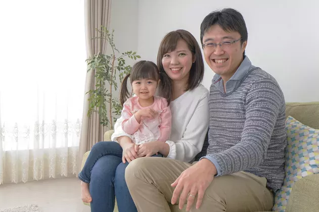

Prima ero piena di complessi. E adesso? Sono ringiovanita di 15 anni e ho un sacco di energia per fare le cose! Esco, incontro persone. La mia vita ha preso colore.
Géczi Kata
Kaposvár
Ez elképesztő! Végre sima lett a bőröm, és nem kell rengeteg alapozót feltennem, hogy normálisan nézzek ki... Úgy érzem, hogy több az energiám, és optimista vagyok. Csak ajánlani tudom!
Kiss Vera
Szeged
A ráncos nyak, a többi borzalmas ránc, valamint a szürke és száraz bőröm elvette az életem minden örömét ... De ez mind a múlté! A nem csak működik, hanem 100% -ban természetes is. Nincsenek semmiféle mellékhatásai és teljesen biztonságos. A világon nincs jobb ismert módszer a bőr fiatalítására.
Berényi Alíz
Szőreg
A szomszédomnak igaza volt! Ez a szer szó szerint visszapörgeti az időt! Nincs több ránc, és nem kell többé szégyellned, hogy nézel ki.
Kecskeméti Tímea
Balatongyörök
A BŐRE OLYAN LESZ, MINT A SELYEM AKÁR 21 NAP ALATT!
Ezt a kezelési hatást feleségem tapasztalta, akinek arcát mély hegek boritottak... Az Ön ráncai és foltjai még gyorsabban eltűnnek!
Üdvözlöm!
A nevem Kenzo Sakura, tudós vagyok, molekuláris genetikával foglalkozom a Tokiói Biotechnológiai Intézetben (Japán). Egy éve feltaláltam egy dermális lifting formulát, amely könnyen használható és szuper hatékony. Ennek köszönhetően 312 000 önkéntes (köztük szeretett feleségem is) végleg megszabadult a bőr hibáktól (ráncok, megereszkedett bőr, hegek, seprűvénák, foltok, sötét karikák és szem alatti táskák, valamint 31 egyéb rendellenesség).
Ezért, ha már belefáradt a:
-
Évről évre egyre több ráncba – nosztalgiával és keserűséggel emlékezve azokra az időkre, amikor a tükörben fiatal, sima és ragyogó arcot látott;
-
Vastag sminkelésbe - a ráncok, sötét karikák vagy szem alatti táskák, valamint a szürke vagy hóka bőr színének elrejtésébe;
-
Hatalmas pénzösszegeket költeni több tucat hatástalan kozmetikumra - mert a hirdetések szerint kell még egy másik nappali krém, még egy éjszakai krém, egy másik ránctalanító krém, egy másik szemkörnyékápoló krém és így tovább.... állandóan...
El kell olvasni az üzenetet, amit el akarok küldeni…
Mostantól gyorsan, egyszerűen és diszkréten eltávolíthatja az összes ráncait. Gondoljon arra, hogy hamarosan helyreállítja bőre fiatalos megjelenését anélkül, hogy kimenne a fürdőszobából, nem költ többé pénzt hatástalan kozmetikumokra, nem vesztegeti az időt a kompozíciók tanulmányozására stb.
Az egész egy tragikus eseménnyel kezdődött, ami után...
Ez lehetséges, mert feltaláltunk egy forradalmian új cofi-dermális formulát, amely 15, 20 vagy akár 25 évremeg fiatalítja a bőrt. Ennek köszönhetően az összes ránc kisimul, a bőrhibák eltűnnek, és ennek következtében az arc szép, fiatalos és egészséges megjelenést kap.
A feleségem megúszta a halált...
Aznap vettem a feleségemnek, Michikónak néhány vörös rózsát. - Milyen alkalomból? - nevetett meglepetten - Nem adhatok virágot a feleségemnek ok nélkül? - válaszoltam neki és homlokon csókoltam. Michiko megérdemli az összes virágot ezen a világon. Ő egy értékes nő. Mindig mosolygós, melegszívű és megértő.Az 5 éves Yumi kislányunk legjobb édesanyja.
Michiko és Yumi egy gondtalan játék közben, egy nappal a baleset előtt, amely rémálommá változtatta a családunk életét
Egy pillanattal később elköszöntünk, mert egy üzleti megbeszélésre siettem.Láttam a feleségemet ahogy boldogan sétál az utcán. És hirtelen felbukkant 2 csuklyás férfi mellette.
Minden másodpercek alatt történt. Az egyik férfi elakarta venni Michiko táskáját. A feleségem próbált védekezni, mert a férfiaknál volt egy kés.
A lehető leghamarabb odaértem, de már megszöktek, a feleségem pedig a járdán feküdt. Az arcát teljesen ellepte a vér. Emberek tolongtak körülötte. Vörös rózsaszirmok voltak szétszórva mindenhol...
Ez a diagnózis olyan volt, mint egy itélet
– A feleséged élni fog, de sajnos a hegei örökre az arcán maradnak – mondta határozottan az orvos, amikor megérkeztem a kórházba. Ha a kés egy centivel mélyebbre jutott volna, már halott lenne.
A banditák fényes nappal eltorzították a feleségem arcát. És miért? Ellopni egy összeget, amiért még egy doboz cigit sem tudnak venni...
– Kit érdekelnek a hegek! A legfontosabb, hogy Michiko él és jól van – gondoltam naivan, amikor beléptem a kórterembe.
Amikor beléptem a feleségem szobájába, sírva találtam. Michiko alig bírt megszólalni. Minden egyes kimondott szóval egyre jobban fájt az arca.
- Hallottad? Életem végéig úgy fogok kinézni, mint egy szörnyeteg! – suttogta sírva. Így hát szorosan megöleltem, és megismételtem néhány bátorító szót, hogy megnyugtassam.
Amikor elhagytam a feleségem szobáját, valami átfutott rajtam. Összeestem a folyosón egy székre és sírni kezdtem, mint egy kisbaba. A harag és a tehetetlenség könnyei voltak. Nem érte meg! És nem tudtam semmit tenni, hogy segítsek neki...
− "Szörny vagy! Könnyekkel a szemében sírt."
Michiko teljesen befáslizva ment haza. A sebek több hónapig gyógyultak, és ahogyan az orvos mondta is hegeket hagytak. Sminkkel próbálta elfedni a hegeit és mindenféle kenőcsöt és krémet használt, amit adtam neki. De sajnos még mindig láthatóak voltak.
Egy éjszaka a lányunk sikoltozására ébredtem. Felpattantam és a szobájába rohantam. Szívszorító képet láttam. A feleségem megpróbálta megnyugtatni síró lányunkat, miközben ő küzdött. - Hadd kergessem el őket! - kiáltott fel a lánya. Rájöttem, hogy a lányunk rosszat álmodott, de amikor az anyja felébresztette, még jobban megijedt. A feleségem sebhelyes arca hisztériába kergette kislányunkat.
Azóta a feleségem teljesen visszavonult. Bánatában elhanyagolta magát, letakarta a házban lévő összes tükröt, hogy ne kelljen látnia a tükörképét. Néha, amikor hazaértem, láttam ahogy ült a kanapén és üres arckifejezéssel nézte a falat. Fájdalommal néztem, ahogy szeretett feleségem mély depresszióba esik.
A lányunk félt az anyja arcán lévő hegektől
Hogyan fedeztem fel a "bőrfiatalító aktivátort"?
Belefáradtam a semmittevésbe. Meg kell szabadítanom a feleségemet a sebektől és helyre kell állítanom a békét a családomban. Tudós vagyok, a genetikai kutatás specialistája. Részt vettem olyan anyagok feltalálásában, amelyek milliós nyereséget hoztak a nagy japán kozmetikai cégeknek. Elhatároztam, hogy minden tudásomat és sokéves tapasztalatomat felhasználva megalkotok egy olyan formulát, amely helyreállíthatja feleségem gyönyörű, egészséges, hegmentes bőrét.
Azonnal elkezdtem tesztelni. A Biotechnológiai Intézet, ahol dolgozom, a világ egyik legmodernebb laboratóriummal rendelkezik. A piacra kerülés előtt teszteljük a világ legnagyobb márkáinak kozmetikumait.
6 hónapja próbálkoztam a legerősebb természetes anyagok kombinációival. Célom egy olyan formula létrehozása volt, amely aktiválja az automatikus bőrregenerációt. Más szóval, azt akartam, hogy a formulám megújítása feleségem arcbőrét és visszaadja természetes szépségét. Azt is akartam, hogy 100%-ban biztonságos legyen az egészsége szempontjából. Michiko bőre már így is siralmas állapotban volt, és nem tehettem ki további irritációnak.
Főleg éjszaka dolgoztam, mert nappal a szakmai feladatokat kellett ellátnom. Hat hónap munka után nagyon kimerültem. Féltem, hogy nem lesz elég erőm - hogy annyi álmatlan éjszaka, stressz és folyamatos erőfeszítés után a testem nem lesz képes megbirkózni vele.
Egyre gyakrabban szédültem, kifulladtam, furcsa fájdalmat is éreztem a mellkasomban. Egy este, 6 hónappal a vizsgálatok kezdete után a sürgősségi ügyeleten kötöttem ki. Azt mondták, szívroham tüneteim vannak. Soha nem mondtam el a feleségemnek.
Ez a csésze kávé igazi életmentőnek bizonyult
Azonban úgy éreztem, hogy egyre közelebb kerülök a sikerhez és nem adhattam fel.
Egy szerencsés eset segített nekünk. Sok órás laboratóriumi munka után a szemem szó szerint magától becsukódott. Így hát a menzán vettem magamnak egy csésze zöld kávét, amit nagyon dicsértek a laborban dolgozó kollégáim. Azt mondták, sokkal hatékonyabban stimulál, mint a fekete kávé. Akkor próbáljuk ki – gondoltam, miközben egy csésze gőzölgő itallal visszatértem a laborba.
Amikor az italt a polcra tettem, bekövetkezett a katasztrófa. A hosszú órákig tartó munka után fáradtan, véletlenül a pohár teljes tartalmát beleöntöttem abba a formulába, amelyen az elmúlt hónapokban dolgoztam.
Káromkodtam egy jó nagyot! Tudtam, hogy a zöld kávé erős anyag, amelyet gyakran adnak a kozmetikumokhoz aktivátorként. Nem tudtam pontosan, hogyan fog változni a képletem működése. De tudtam, hogy az gyökeresen megváltozik. Ez olyan, mintha egy evőkanál egzotikus fűszert adnánk a szinte kész befőtthöz. Az aroma természetesen teljesen megváltozna. És ez így is lett. Hatását nem lehet visszavonni.
Azt hittem, minden elveszett. A formulám már majdnem kész volt és most a baleset megváltoztatta a működését. És az egész folyamatot újra kell kezdeni. Tudtam, hogy nem lesz elég erőm további hat hónapos kutatáshoz.
De aztán csoda történt! A berendezés megőrült. Megnéztem a mikroszkópot. A képlet végre elkezdett működni, ahogy kell! A zöld kávé aktivátorként működött! A mikroszkóp alatt látható bőrsejtek automatikusan és függetlenül kezdtek kollagént termelni. Ez egy „fiatalsági fehérje” nevű anyag, amely többek között a bőr fiatalos megjelenéséért felelős.
A mikroszkóp alatt látható sejtek szó szerint "láthatóan megfiatalodtak".
Már tudtam, hogy ez mit jelent. Gondosan újraszámoltam az arányokat. Ennek köszönhetően olyan eredményeket értem el, amelyekről nem is álmodtam. Kiderült, hogy a formula nemcsak megszabadítja a bőrt a hegektől, anyajegyektől és pattanásoktól. Mivel serkenti a kollagén automatikus termelődését, az öregedés minden jelét is visszafordítja. Rájöttem, hogy tévedésből feltaláltam a "fiatalító szérumot", hogy segítsek a feleségemnek megszabadulni az elcsúfító hegektől.
– Új arcot adtál nekem – mondta könnyes szemekkel
Néhány nap múlva mosolyt láttam az arcán, az elsőt néhány hónap után. – Kenzo, nézd, a hegek egyre kisebbek – mondta izgatottan. Egy hét elteltével a hegek finom fehér vonalaknak tűntek.
A fordulópont a 14. napon következett be. A hegek szinte teljesen eltűntek és minden tökéletlenség (szem körüli finom ráncok, régi aknés hegek, törött hajszálerek) teljesen felszívódott. 21 nap után nem voltak hegek a feleségem arcán.
Elkezdett kijárni a házból és újra felvette a kapcsolatot a barátaival. Abbahagyta a sminkelést is. Nem kellett javítania a megjelenésén: a bőre hibátlan volt, és nem volt szüksége finomításra.
– Anya, angyali arcod van – mondta egy este a lányunk, miközben Michikót simogatta a kezével.A feleségem olyan hálával nézett rám, amit lehetetlen kifejezni szavakkal. Úgy éreztem, elvégeztem a munkám.

Mi hárman ismét boldogok voltunk.
Ám egy este, egy hónappal a formula alkalmazása után, a feleségem komoly arckifejezéssel közeledett felém:
- Ma láttam anyámat. Az elmúlt években rettenetesen megöregedett. És a balesetem után 10 évvel idősebb lett... Rettenetesen depressziós, "úgy néz ki, mint egy öreg, összezsugorodott alma".
– Tudom, hogy ezt a formulát csak nekem találtad ki. De gondolj bele: segíthetnél anyámnak és több száz másik nőnek. Kenzo, ezt a képletet nem tudod elrejteni a világ elől. A hanyagság bűne lenne!
Michikónak igaza volt: nem volt jogom egy ilyen forradalmi találmányt magamban tartani. Úgy döntöttem, mindent megteszek, hogy a képletemet minél több nővel megosszam. A felfedezést nagyszabású tesztelésre küldtem.
A világ 5 legjobb kutatólaboratóriuma (USA, Kanada, Európa, Kína és Japán) megerősítette a formulám maximális hatékonyságát. Szabadalmaztattam a következő néven: .
Az Elesse krém eltünteti a ráncok 98,9%-át és 15, 20 vagy akár 25 évvel megfordítja a bőr biológiai korát.
Azt akartam, hogy a találmányom könnyen használható legyen, hogy minél több nő tudja használni. Minden reggel és este, hogy észre vegye a napról napra eltűnő ráncokat és hibákat.
Mindössze 2 perccel az cofidermális lifting formula használata után felszabadul a bőr természetes kollagén termelő képessége. Már az első használat után észre fogja venni, hogy a bőr feszesebb, miközben a látható ráncok szó szerint „felszívódnak”.
A cofi-dermális formulámat használó nők gyakran "varázslatos"-ként írják le a hatását. És valóban, első pillantásra annak tűnhet. Előfordulhat, hogy bekeni a krémmel az arcát, majd kimegy a konyhába vacsorát készíteni. Amikor néhány óra elteltével újra tükörbe néz, úgy érezheti, hogy valaki szó szerint eltüntette az arcán lévő ráncokat.
Sok nő tapasztalja ezt az érzést. Azt írják nekem a hölgyek, hogy néhány óra alatt megszabadultak az évek óta megszokott ráncoktól. A "dohányos" ráncai a száj körül, az "oroszlán ráncai" a szemöldökök között, a mimikai ráncok. A cofi-dermális formula felvitele után ezek a tökéletlenségek szó szerint óráról órára eltűnnek.
Az formula használata után Ön eltünteti az összes ráncot, pattanást, sötét karikát, a szem alatti táskákat, valamint az elszíneződési foltokat és a szürkés bőrszín. Arca tökéletesen sima és fényes lesz, mint egy 20 éves lány arca. Megfiatalodva fogja magát érezni, elégedett lesz a megjelenésével és büszkén nézi majd magad a tükörben!
Az cofidermális formula használata után:

ÖN MEGSZABADUL A MÉLY RÁNCOKTÓL

MEGSZÜNTETI A MÉLY MIMIKAI RÁNCOKAT

RADIKÁLISAN MEGTISZTÍTJA A BŐRÉT


ELTÁVOLÍTJA A FOLTOKAT ÉS AZ ELSZÍNEZŐDÉSEKET
MEGSZABADUL A SZEM ALATTI KARIKÁKTÓL

Ezeket az eredményeket a világszerte 312 000 nőből álló kontroll csoporttól kaptuk, minden korosztálytól és bőr típustól függetlenül. Akár 29, akár 69 éves, ha bőre száraz és sérült vagy zsíros és ekcémára hajlamos az bőrkrém formulám tökéletes simaságot, feszességet és ragyogást kölcsönöz a bőrének.
Még akkor is, ha korábban nem használt krémeket és maszkokat, akkor is, ha dohányzik és szeret strandolni, akkor is, ha már rég nem reménykedett, hogy visszanyerheti fiatalos szépséged. Tudja, hogy 21 nap alatt megszabadul minden ránctól és mindenkit hibátlan, fiatalos, tökéletes bőrrel fogja elkápráztatni.
Miért olyan hatékony a cofidermális formulám?
Az cofi-dermális formulám hatására komplex regenerációs folyamatok mennek végbe a bőrben.
Gondolkodott már azon, hogy a fiatal lányoknak miért nem kell aggódniuk a ráncok miatt és miért mindig feszes, sima és ragyogó a bőrük? Az egész egy dologról szól: a kollagénről.
A kollagén egy „fiatalsági szérum”, amelyet a szervezet képes önmagában is előállítani. Sajnos az életkor előrehaladtával a szervezet egyre kevesebbet termel. 60 éves kor után a kollagéntermelés teljesen megszűnik, a bőr elveszti simaságát, feszességét és természetes ragyogását. Ráncok, beesett szemek, foltok és elszíneződések jelennek meg.
A piacon több tucat kollagént tartalmazó termék található, amelyek a bőr fiatalságának helyreállítását ígérik. Ha azonban bekenjük az arcunkat kollagénes krémmel, vagy akár kapszulákat is fogyasztunk, amelyek ezt az összetevőt tartalmazzák, a bőrünkben lévő hiányt ez nem pótolja.
Ez olyan, mintha úgy próbálná hidratálni a bőrét, hogy vizet önt az arcára. Ezzel csak árt a bőrének. Ezenkívül a kezelés után a bőr valószínűleg még szárazabb és irritáltabb lesz. Hasonló a különböző krémekben, kapszulákban és tapaszokban található kollagénhez.
Az igazság az, hogy nem lehet helyreállítani a bőr fiatalságát, ha kívülről biztosítjuk kollagénnel. Csak idő- és pénzpocsékolás. A fiatal, sima és ragyogó bőr visszanyeréséhez vissza kell állítani a bőr természetes kollagén termelő képességét.
A fiatal, sima és ragyogó bőr visszanyeréséhez vissza kell állítani a bőr természetes kollagén termelő képességét. A megfelelő mennyiségű zöld kávé-kivonattal dúsított Elesse krém, egyedülálló hatóanyag-kombinációnak köszönhetően bőrünk minden sejtjét automatikusan kollagén termelésre serkenti. Ennek eredményeként a bőr egyszer s mindenkorra visszanyeri természetes önregeneráló képességét és többé nem kell aggódnia a ráncok, a megereszkedett arc-, nyak- és dekoltázsbőr, a kipukkadt hajszálerek vagy a foltok miatt.
A kollagén termelésre képtelen bőr, ráncokkal borított, nem feszes és nem ragyog
Tökéletesen sima, tömör és ragyogó bőr, amely automatikusan kollagént termel
A HATÉKONYSÁGÁT MEGERŐSÍTETTÉK
A formulám forradalmi összetétele lehetővé teszi a hegek (mint a feleségem esetében), a mély ráncok és a bőrhibák eltávolítását is, amelyeket korábban csak plasztikai műtéttel lehetett eltávolítani. Ezért az coffee-dermális formulámat a "fiatalság japán szérumaként" határozták meg és felfedezésemért Konfuciusz-díjat (a Nobel-díj ázsiai megfelelőjét) kaptam a bőrgyógyászat területén.
A legértékesebb jutalom azonban számomra az a több ezer levél, amelyet a világ minden tájáról kapok olyan nőktől, akik már részesültek az cofidermális formulámból. Rendkívüli történeteket írnak le metamorfózisukról és megírják, hogyan változtatta meg a kezelés jobbá az életüket. Szeretnék idézni (nyilván a szerző beleegyezésével) egy olasz nő, Elena levelét, aki az egyik önkéntesként tesztelte a formulámát. Elena asszony ezt írja:

- Ez a kezelés megváltoztatta az életemet! Úgy néztem ki, mint egy öregasszony. Mély ráncok, táskák a szem alatt, szörnyű foltok az egész bőrön. Nem is akartam elhagyni a házat, és látni sem akartam senkit. A gyerekek rám mutogattak és azt kiabálták, hogy "öreg boszorkány". 21 nap telt el Dr. Sakura kezelése óta, és a bőröm olyan sima, mint 30 évvel ezelőtt. Hirtelen engem kezdtek nézni a ferfiak az utcán. A férjem is féltékeny lett és mint fiatal koromban újra elcsábított. Most már tudom, hogy ha nem alkalmaztam volna ezt a kezelést, életem legnagyobb hibáját követtem volna el. Ebben a pillanatban szeretném kifejezni köszönetemet, doktor úr, és sok sikert kívánok munkájának folytatásához!
Ne kockáztasson!
Az cofi-dermális formulája már nők ezreinek segített megszabadulni a csúnya ráncoktól és egyszer s mindenkorra helyreállítani bőrük fiatalságát. Ez a bizonyított hatékonyság globális felfedezése, amely megkapta a háromszoros elégedettség tekintélyes garanciáját: eredetiség, minőség és elismerés.
Háromszoros elégedettségi garancia:
Eredetiségi garancia - biztos lehet benne, hogy az eredeti terméket kapja meg, amely csak ezen az oldalon érhető el.
Minőségbiztosítás – a fejlett gyártási módszernek köszönhetően az kávé formula megfelel a legmagasabb minőségi előírásoknak. A formula összes összetevőjét alaposan tesztelték, ami 100%-os biztonságot igazolt bőre egészsége szempontjából.
Az elismerés garanciája – számos fogyasztói és tudományos teszt igazolja az cofidermális formula maximális hatékonyságát.
ÓVAKODJON a hamisítványoktól!
Röviddel az cofidermális formulám piacra dobása után a piacot szó szerint ellepték a különféle zöldkávé-kivonattal dúsított termékek. Ne hagyd magad becsapni! A nem ellenőrzött hamisítványok használata nemcsak hogy nem segít megszabadulni a bőrfoltoktól, hanem az egészségre is veszélyes lehet!
A formulám összetételét a legnagyobb gondossággal fejlesztettem ki. Egyik összetevő sem volt ott véletlenül. Nem elég hozzáadni bizonyos mennyiségű zöld kávét a nem tesztelt összetevők véletlenszerű keverékéhez, hogy bőre 15, 20 vagy 25 évvel fiatalabb legyen. A zöld kávé-kivonatnak nagyon koncentráltnak, a babnak pedig a legjobb minőségűnek kell lennie. Ráadásul nem csak kávéról van szó, hanem a recept többi összetevőjének tökéletes arányáról, amin keményen dolgoztam a laborban. Ezért, ha 100% -ban biztos akar lenni abban, hogy 21 nap alatt megszabadulhat a ráncoktól - ne vásároljon hamisítványokat.
Most Ön is visszanyerheti a sima, selymes, feszes és ragyogó bőrt
Ne hagyd, hogy az emberek azt mondják neked, hogy egy egész polcnyi különböző krémre van szükséged a ráncok megszabadulásához. Vagy ami még rosszabb, az arcodat sebészeti sziké alá kell helyeznie. Tudd, hogy most az összes ránc, folt 98,9%-át eltávolíthatod, visszanyerve a bőr simaságát, feszességét és tökéletes ragyogását.
Az Elesse krémnek köszönhetően megszabadul a foltoktól, visszanyeri a bőr simaságát, feszességét és tökéletes ragyogását. Több millió dolláros szerződést ajánlottak nekem, de nem ezért alkottam meg a formulát. Célom, hogy minél több nőt megszabadítsak az önbizalmukat csökkentő és szeretteitől elszigetelő, elcsúfító bőrhibáktól. Azt akarom, hogy minden nő büszke legyen a külsejére – akárcsak most a feleségem.
Mindent megtettem annak érdekében, hogy az formulám a lehető leghamarabb világszerte elérhető legyen. Végre elmondhatom, hogy most már bármelyik nő használhatja, tökéletes simaságot kölcsönözve a bőrnek.
Ezért arra biztatlak, hogy élj ezzel a lehetőséggel! Az cofidermális formula megszerzéséhez nem kell pénzt online küldenie. Csak töltse ki az adatlapot 2 percen belül és néhány napon belül meg is kapja a csomagot, amelyet kényelmesen kifizet a futárnak.
Köszönöm, hogy elolvasta a történetemet. Remélem, egy napon visszaemlékszik erre a napra és azt gondolja, hogy „ez volt az a nap, amely megváltoztatta az életemet”.